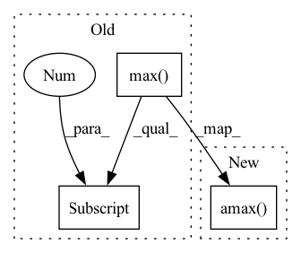

Pattern ID :33900

Before Change
grad = torch.autograd.grad(_output, _input)[0] // (N,C,H,W)
_input.requires_grad_(False)
heatmap = grad.abs().max(dim=1)[0] // (N,H,W)
heatmap.sub_(heatmap.min(dim=-2, keepdim=True)
[0].min(dim=-1, keepdim=True)[0])
heatmap.div_(heatmap.max(dim=-2, keepdim=True)
After Change
grad = torch.autograd.grad(_output, _input)[0] // (N,C,H,W)
_input.requires_grad_(False)
heatmap = grad.abs().amax(dim=1) // (N,H,W)
heatmap.sub_(heatmap.amin(dim=-2, keepdim=True).amin(dim=-1, keepdim=True))
heatmap.div_(heatmap.amax(dim=-2, keepdim=True).amax(dim=-1, keepdim=True))
heatmap = apply_cmap(heatmap.detach().cpu(), cmap)
In pattern: SUPERPATTERN
Frequency: 7
Non-data size: 3
Instances
Fragment ID: 97146594
Project Name: ain-soph/trojanzoo
Commit Name: ad01410bb591b641aa0763ae63169c6d18f1720c
Time: 2021-11-26
Author: ain-soph@live.com
File Name: trojanvision/models/imagemodel.py
M Class Name: ImageModel
N Class Name: ImageModel
M Method Name: get_heatmap(5)
N Method Name: get_heatmap(5)
M Parent Class: Model
N Parent Class: Model
M File Name: trojanvision/models/imagemodel.py
N File Name: trojanvision/models/imagemodel.py
M Start Line: 220
M End Line: 234
N Start Line: 220
N End Line: 231
'>
Before Change
def forward(self, x):
x_avg = torch.mean(x, dim=1, keepdim=True)
x_max = torch.max(x, dim=1, keepdim=True)[0]
x_attn = torch.cat([x_avg, x_max], dim=1)
x_attn = self.conv(x_attn)
return x * x_attn.sigmoid()
After Change
self.gate = create_act_layer(gate_layer)
def forward(self, x):
x_attn = torch.cat([x.mean(dim=1, keepdim=True), x.amax(dim=1, keepdim=True)], dim=1)
x_attn = self.conv(x_attn)
return x * self.gate(x_attn)
'>
Fragment ID: 97146579
Project Name: feng-lab/pytorch-image-models
Commit Name: 742c2d524726d426ea2745055a5b217c020ccc72
Time: 2021-05-27
Author: rwightman@gmail.com
File Name: timm/models/layers/cbam.py
M Class Name: SpatialAttn
N Class Name: SpatialAttn
M Method Name: forward(2)
N Method Name: forward(2)
M Parent Class: nn.Module
N Parent Class: nn.Module
M File Name: timm/models/layers/cbam.py
N File Name: timm/models/layers/cbam.py
M Start Line: 55
M End Line: 59
N Start Line: 63
N End Line: 65
'>
Before Change
// seq_centers: (iter, 1, C, H, W) seq_bias: (iter)
// seq_centers = seq[:, 0] // debug
if "start" in self.output:
mean_error = (seq_centers[:, 0] - seq[:, 0]).abs().flatten(start_dim=1).max(dim=1)[0]
print("Mean Shift Distance: ".ljust(25) +
f"avg {mean_error.mean():<10.5f} min {mean_error.min():<10.5f} max {mean_error.max():<10.5f}")
print("Bias Estimation: ".ljust(25) +
f"avg {seq_bias.mean():<10.5f} min {seq_bias.min():<10.5f} max {seq_bias.max():<10.5f}")
After Change
// seq_centers: (iter, 1, C, H, W) seq_bias: (iter)
// seq_centers = seq[:, 0] // debug
if "start" in self.output:
mean_error = (seq_centers[:, 0] - seq[:, 0]).abs().flatten(start_dim=1).amax(dim=1)
print("Mean Shift Distance: ".ljust(25) +
f"avg {mean_error.mean():<10.5f} min {mean_error.min():<10.5f} max {mean_error.max():<10.5f}")
print("Bias Estimation: ".ljust(25) +
f"avg {seq_bias.mean():<10.5f} min {seq_bias.min():<10.5f} max {seq_bias.max():<10.5f}")
'>
Fragment ID: 97146593
Project Name: ain-soph/trojanzoo
Commit Name: ad01410bb591b641aa0763ae63169c6d18f1720c
Time: 2021-11-26
Author: ain-soph@live.com
File Name: trojanvision/defenses/adv/advmind.py
M Class Name: AdvMind
N Class Name: AdvMind
M Method Name: inference(3)
N Method Name: inference(3)
M Parent Class: Defense
N Parent Class: Defense
M File Name: trojanvision/defenses/adv/advmind.py
N File Name: trojanvision/defenses/adv/advmind.py
M Start Line: 111
M End Line: 111
N Start Line: 111
N End Line: 111
'>
Before Change
_label = _label.cpu()
for layer in all_ps.keys():
ps = all_ps[layer] // (C, n_samples, batch_size, num_classes)
vs: torch.Tensor = ps[:, self.n_samples // 5:].max(dim=1)[0] \
- ps[:, :self.n_samples // 5].min(dim=1)[0] // (C, batch_size, num_classes)
values, labels = vs.sort(dim=-1, descending=True)
condition1 = labels[:, :, 0].eq(_label) // exclude the ground-truth labels
After Change
_label = _label.cpu()
for layer in all_ps.keys():
ps = all_ps[layer] // (C, n_samples, batch_size, num_classes)
vs: torch.Tensor = ps[:, self.n_samples // 5:].amax(dim=1) \
- ps[:, :self.n_samples // 5].amin(dim=1) // (C, batch_size, num_classes)
values, labels = vs.sort(dim=-1, descending=True)
condition1 = labels[:, :, 0].eq(_label) // exclude the ground-truth labels
'>
Fragment ID: 97146582
Project Name: ain-soph/trojanzoo
Commit Name: ad01410bb591b641aa0763ae63169c6d18f1720c
Time: 2021-11-26
Author: ain-soph@live.com
File Name: trojanvision/attacks/backdoor/imc_variants/imc_abs.py
M Class Name: IMC_ABS
N Class Name: IMC_ABS
M Method Name: find_min_max(3)
N Method Name: find_min_max(3)
M Parent Class: IMC
N Parent Class: IMC
M File Name: trojanvision/attacks/backdoor/imc_variants/imc_abs.py
N File Name: trojanvision/attacks/backdoor/imc_variants/imc_abs.py
M Start Line: 121
M End Line: 122
N Start Line: 121
N End Line: 122
'>
Before Change
def forward(self, x):
x_avg = torch.mean(x, dim=1, keepdim=True)
x_max = torch.max(x, dim=1, keepdim=True)[0]
x_attn = 0.5 * x_avg + 0.5 * x_max
x_attn = self.conv(x_attn)
return x * x_attn.sigmoid()
After Change
self.gate = create_act_layer(gate_layer)
def forward(self, x):
x_attn = 0.5 * x.mean(dim=1, keepdim=True) + 0.5 * x.amax(dim=1, keepdim=True)
x_attn = self.conv(x_attn)
return x * self.gate(x_attn)
'>
Fragment ID: 97146583
Project Name: feng-lab/pytorch-image-models
Commit Name: 742c2d524726d426ea2745055a5b217c020ccc72
Time: 2021-05-27
Author: rwightman@gmail.com
File Name: timm/models/layers/cbam.py
M Class Name: LightSpatialAttn
N Class Name: LightSpatialAttn
M Method Name: forward(2)
N Method Name: forward(2)
M Parent Class: nn.Module
N Parent Class: nn.Module
M File Name: timm/models/layers/cbam.py
N File Name: timm/models/layers/cbam.py
M Start Line: 70
M End Line: 74
N Start Line: 77
N End Line: 79
'>
Before Change
_label = _label.cpu()
for layer in all_ps.keys():
ps = all_ps[layer] // (C, n_samples, batch_size, num_classes)
vs: torch.Tensor = ps[:, self.n_samples // 5:].max(dim=1)[0] \
- ps[:, :self.n_samples // 5].min(dim=1)[0] // (C, batch_size, num_classes)
values, labels = vs.sort(dim=-1, descending=True)
condition1 = labels[:, :, 0].eq(_label) // exclude the ground-truth labels
After Change
_label = _label.cpu()
for layer in all_ps.keys():
ps = all_ps[layer] // (C, n_samples, batch_size, num_classes)
vs: torch.Tensor = ps[:, self.n_samples // 5:].amax(dim=1) \
- ps[:, :self.n_samples // 5].amin(dim=1) // (C, batch_size, num_classes)
values, labels = vs.sort(dim=-1, descending=True)
condition1 = labels[:, :, 0].eq(_label) // exclude the ground-truth labels
'>
Fragment ID: 97146580
Project Name: ain-soph/trojanzoo
Commit Name: ad01410bb591b641aa0763ae63169c6d18f1720c
Time: 2021-11-26
Author: ain-soph@live.com
File Name: trojanvision/defenses/backdoor/abs.py
M Class Name: ABS
N Class Name: ABS
M Method Name: find_min_max(3)
N Method Name: find_min_max(3)
M Parent Class: BackdoorDefense
N Parent Class: BackdoorDefense
M File Name: trojanvision/defenses/backdoor/abs.py
N File Name: trojanvision/defenses/backdoor/abs.py
M Start Line: 311
M End Line: 312
N Start Line: 311
N End Line: 312
'>
Before Change
_label = _label.cpu()
for layer in all_ps.keys():
ps = all_ps[layer] // (C, n_samples, batch_size, num_classes)
vs: torch.Tensor = ps[:, self.n_samples // 5:].max(dim=1)[0] \
- ps[:, :self.n_samples // 5].min(dim=1)[0] // (C, batch_size, num_classes)
values, labels = vs.sort(dim=-1, descending=True)
condition1 = labels[:, :, 0].eq(_label) // exclude the ground-truth labels
After Change
_label = _label.cpu()
for layer in all_ps.keys():
ps = all_ps[layer] // (C, n_samples, batch_size, num_classes)
vs: torch.Tensor = ps[:, self.n_samples // 5:].amax(dim=1) \
- ps[:, :self.n_samples // 5].amin(dim=1) // (C, batch_size, num_classes)
values, labels = vs.sort(dim=-1, descending=True)
condition1 = labels[:, :, 0].eq(_label) // exclude the ground-truth labels
'>
Fragment ID: 97146581
Project Name: ain-soph/trojanzoo
Commit Name: ad01410bb591b641aa0763ae63169c6d18f1720c
Time: 2021-11-26
Author: ain-soph@live.com
File Name: trojanvision/attacks/backdoor/imc_variants/imc_adaptive.py
M Class Name: IMC_Adaptive
N Class Name: IMC_Adaptive
M Method Name: find_min_max(3)
N Method Name: find_min_max(3)
M Parent Class: IMC
N Parent Class: IMC
M File Name: trojanvision/attacks/backdoor/imc_variants/imc_adaptive.py
N File Name: trojanvision/attacks/backdoor/imc_variants/imc_adaptive.py
M Start Line: 136
M End Line: 137
N Start Line: 136
N End Line: 137